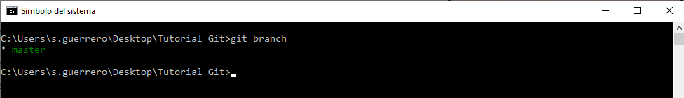

Gestión de ramas
Una de las funcionalidades más interesantes de los sistemas de gestión de versiones es la posibilidad de trabajar con ramas. Para trabajar así con diferentes copias del código para evaluar la inclusión de funcionalidades sin afectar a la estabilidad del programa. Un ejemplo de ello es la metodología GitFlow. Para crear una nueva rama se tiene que utilizar el comando

Aquí os dejo unos comandos para empezar a trabajar con ramas
Crear una rama nueva
git branch NombreRama
en donde NombreRama se tiene que reemplazar por el nombre que se le desea dar a la rama. Para moverse a la nueva rama u otra se escribe el comando:
git checkout NombreRama
Para comprobar en que rama estamos trabajando:
git branch